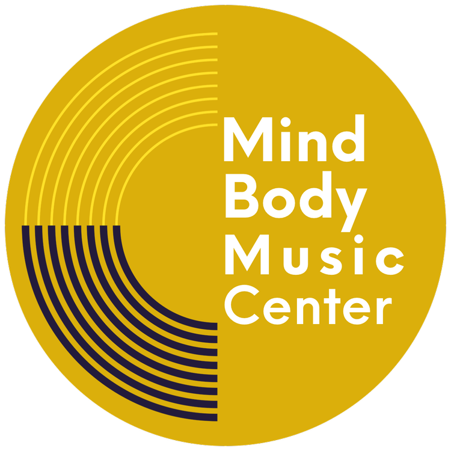

MBMC Radio
Design review · November 2026
The full page. The artwork, the list of tracks, and the player bar along the bottom. It is light or dark to match the device it is viewed on.
A calmer screen for listening. Just the artwork, the track that is playing, what comes next, and the player bar. Always dark. The link in the top corner goes back to normal mode.
Chill mode with nothing moving. The bouncing bars go away and the artwork becomes the MBMC logo. It is switched on with the Quiet mode button in chill mode, and the music keeps playing.